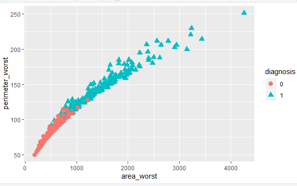
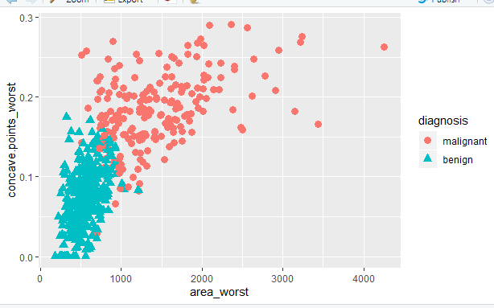

Introduction:
Breast cancer is the most common cancer among women ,and one of the major causes of death among women worldwide. Every year approximately 124 out of 100,000 women are diagnosed with breast cancer, and the estimation is that 23 out of the 124 women will die of this disease. Breast Cancer occurs as a results of abnormal growth of cells in the breast tissue, commonly referred to as a tumor. A tumor does not mean cancer - tumors can be benign (not cancerous), pre-malignant (pre-cancerous), or malignant (cancerous) .Tests such as MRI, mammogram, ultrasound and biopsy are commonly used to diagnose breast cancer.
The use of machine learning and artificial intelligence techniques has revolutionized the process of diagnosis the breast cancer ,Which helped detect it early so that the chance of treatment is greater and An automated screening system might also provide greater detection accuracy by removing the inherently subjective human component from the process. In this project we used three types of machine learning :Knn, Naïve Bayes, and Decision Tree to predict if a tumor is cancerous or not using 31 feature then we made a comparison on performance of methods to select the more accurate methods.
In this project we used three types of machine learning :Knn, Naïve Bayes, and Decision Tree to predict if a tumor is cancerous or not using 31 feature then we made a comparison on performance of methods to select the more accurate methods.
Methodology:
1.kNN:
The k-nearest neighbors (KNN) algorithm is a simple, supervised machine learning algorithm that can be used to solve both classification and regression problems. It’s easy to implement and understand, but has a major drawback of becoming significantly slows as the size of that data in use grows.KNN works by finding the distances between a query and all the examples in the data, selecting the specified number examples (K) closest to the query, then votes for the most frequent label (in the case of classification) or averages the labels (in the case of regression).
First: pre-processing :
We started by importing data and checking that there is no missing values,then we make 0 stands for benign and 1 stands for malignant tumors.
After that we made feature slection to choose most effective features using library ”FSelector” that rank features by some criteria and select the ones that are above a defined threshold and then, search for optimum feature subsets from a space of feature subsets.

We used “ggplot2” to plot of feature selection result as shown :
The last thing we did in pre-processing is scaling data(normalising data):

Second:appling knn and k-folded cv:
we used for loop to randomly split the data k times to use all data for training and all data for testing .
2.Naive Bayes:
Naive Bayes models are a special kind of classification machine learning algorithms. They are based on a statistical classification technique called ‘Bayes Theorem’. Naive Bayes model are called ‘naive’ algorithms because they make an assumption that the predictor variables are independent from each other. In other words, that the presence of a certain feature in a dataset is completely unrelated to the presence of any other feature.They provide an easy way to build accurate models with very good performance given their simplicity.It assumes that features follow a normal distribution and Gaussian carve.
First: pre-processing :
We started by importing data and checking that there is no missing values, then we make 0 stands for benign and 1 stands for malignant tumors.
After that we made feature slection to choose most effective features using library ”Bor uta” that do feature selection following these steps :
• Firstly, extending information system.
• Added attributes are shuffled randomly in order to remove any corellation with the response variable.
• Random forest classifier is run on the whole data set and Z-scores are computed for all attributes .
• Out of all shadow attributes find the one with the maximum Z score and then assign a hit to every attribute that scored better than the one with maximum Z-score.
• For each attribute with undetermined importance perform a two-sided test of equality with the the one obtained for shadow attribute with maximum Z-score.
• Mark the attributes which have importance signifcantly lower than the shadow with maximum Z-score as `unimportant’ and permanently remove them from the dat aset.
• Remove all shadow, artificially added attributes.
• Repeat the procedure until the importance is assigned for all the attributes, or the algorithm has reached the previously set limit of the random forest runs.

We used “ggplot2” to plot of feature selection result as shown :
Second:appling naïve bayes and k-folded cv:
we used library “e1071” for naïve bayes .Also, we used for loop to randomly split the data k times to use all data for training and all data for testing
3.Decision Tree :
In decision analysis, a decision tree can be used to visually and explicitly represent decisions and decision making. As the name goes, it uses a tree-like model of decisions. This algorithm is recursive binary Splitting in nature as the groups formed can be sub-divided using same strategy. Due to this procedure, this algorithm is also known as the greedy search, as it has an excessive desire of getting more pure data and information gain by calculating entropy before and after filtration of data. This makes the root node as best predictor/classifier. The decision tree is considered the easiest models to deal with binary classification, because it solves the problem of over fitting by making more than one model and comparing among them in the end.
First: pre-processing :
We started by importing data and checking that there is no missing values,then we make 0 stands for benign and 1 stands for malignant tumors.
After that we made feature slection to choose most effective features using library ”Bor uta” (explained above).

We used “ggplot2” to plot of feature selection result as shown :
Second:appling Decision Tree and k-folded cv:
we used library “rpart” for Decision Tree .Also, we used for loop to randomly split the data k times to use all data for training and all data for testing.
Leave a comment